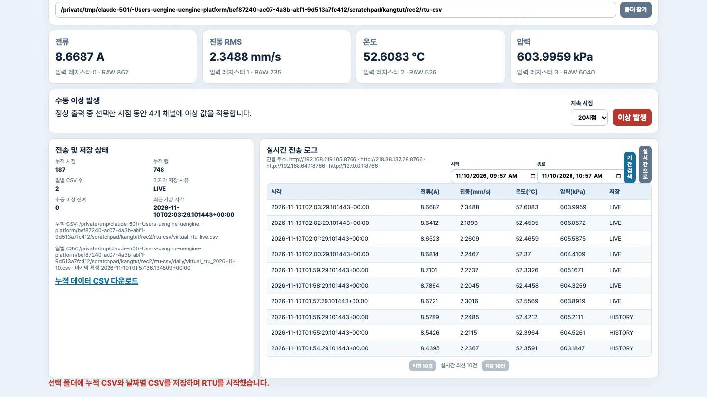
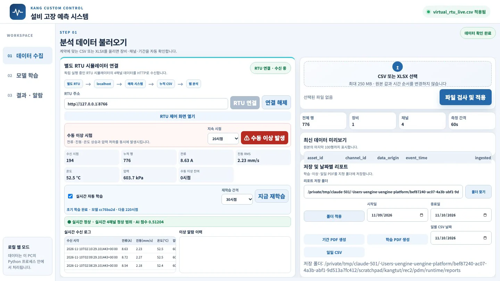
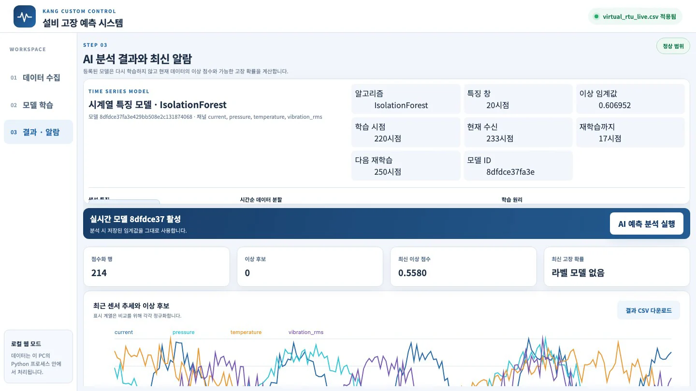

배포본의 두 프로그램, 가상 RTU 시뮬레이터와 설비 고장 예측 시스템을 설치하고 실행합니다. 예측 시스템은 실행되면 바로 RTU에 연결합니다. 이어서 받은 이력으로 첫 모델을 학습합니다. 그 뒤로는 1초마다 새 시점을 받아 분석하고, 30시점마다 모델을 다시 학습합니다.
무엇을 · 왜#
현장에서는 센서 값이 PLC나 RTU(원격 단말)를 거쳐 들어옵니다. 배포본은 이 구조를 두 프로그램으로 나누어 구현합니다.
| 프로그램 | 주소 | 하는 일 | 하지 않는 일 |
|---|---|---|---|
| 가상 RTU 시뮬레이터 | http://127.0.0.1:8766 |
전류·진동 RMS·온도·압력 네 채널을 만들어 1초마다 한 시점(가상 1분)씩 내보내고, 누적 CSV·날짜별 CSV로 저장합니다 | 분석 |
| 설비 고장 예측 시스템 | http://127.0.0.1:8765 |
RTU에서 데이터를 받아 학습·검증하고, 받을 때마다 분석해 알람과 리포트를 냅니다 | 설비 제어 |
두 프로그램은 HTTP로만 연결됩니다. 따라서 나중에 RTU 대신 다른 데이터 공급원을 연결할 수 있습니다. 5장에서는 교반기 고장 시나리오를 연결합니다.
가상 RTU의 정상 신호는 다음과 같습니다. 사인파에 잡음을 더한 값이며, 실제 설비를 대표하지 않습니다.
| 채널 | 중심값 | 흔들림 | 고정 규칙 경보 |
|---|---|---|---|
전류 current |
8.4 A | 사인 ±0.3, 잡음 σ 0.05 | 11.5 A 이상 |
진동 RMS vibration_rms |
2.1 mm/s | 사인 ±0.16, 잡음 σ 0.04 | 5.0 mm/s 이상 |
온도 temperature |
52 °C | 사인 ±0.6, 잡음 σ 0.12 | 70 °C 이상 |
압력 pressure |
600 kPa | 사인 ±5, 잡음 σ 0.8 | 500 kPa 이하 |
따라 하기#
-
배포본을 완전히 풀고 그 폴더로 이동합니다. ZIP 안에서 바로 실행하면 안 됩니다. Python 3.12가 있어야 합니다.
python3.12 -V # Python 3.12.x cd KANG_PdM_RTU_배포본_20261109 chmod +x macOS_전체_실행.command PDM_Program/*.command PDM_Program/*.sh rtu_simulator/*.command rtu_simulator/*.shWindows는
Windows_전체_실행.bat을 더블 클릭합니다. Linux는Linux_전체_실행.sh를 씁니다. -
두 프로그램을 설치합니다. 설치는 처음 한 번만 합니다. 프로그램마다 별도의
.venv를 만듭니다(이번 실행에서는 둘 합쳐 약 15초).sh rtu_simulator/setup_unix.sh # Flask 3.1.3 sh PDM_Program/setup_unix.sh # scikit-learn 1.8.0, numpy 2.3.5, reportlab 5.1.0 … -
두 프로그램을 실행합니다.
./macOS_전체_실행.command하나로 둘 다 실행할 수 있습니다. 따로 실행하면 포트를 바꿀 수 있습니다.rtu_simulator/.venv/bin/python -m rtu_simulator --no-browser & # 8766 PDM_Program/.venv/bin/python -m pdm_web # 8765, 브라우저가 열림8765 포트를 이미 다른 프로그램이 쓰고 있다면
예측 시스템은 8765가 열려 있으면 「이미 실행 중입니다」라고만 출력하고 그 주소를 엽니다. 다른 프로그램이 그 포트를 쓰고 있으면 엉뚱한 화면이 뜹니다. 이번 실습에 사용한 컴퓨터에서도 이 문제가 있었습니다. 그럴 때는
--port 18765처럼 포트를 바꿔 실행합니다. RTU 포트(8766)는 예측 시스템 화면의 「RTU 주소」 기본값이라 그대로 두면 편리합니다.http://127.0.0.1:8766/healthz와 예측 시스템의/healthz가status: ok를 돌려주면 됩니다. -
가상 RTU 화면(
http://127.0.0.1:8766)을 엽니다. 오른쪽 위가 「정상 출력 중」이고, 네 채널 카드의 값이 1초마다 바뀝니다. 카드 아래의 「입력 레지스터 0 · RAW 864」는 통신 장비가 소수점을 정수로 보내는 방식을 흉내 낸 것입니다. 전류 8.64 A는 864로 전송됩니다.「누적·일별 CSV 저장 폴더」에 경로를 넣고 시작/재시작을 누르면, 그 폴더에
virtual_rtu_live.csv(전체 누적)와daily/virtual_rtu_날짜.csv(날짜별)가 쌓입니다. 시작하면 먼저 초기 이력 180시점(가상 3시간)을 한꺼번에 만들고, 그다음부터 1초마다 한 시점씩 추가합니다.
가상 RTU 시뮬레이터. 네 채널 값과 입력 레지스터, 전송 간격·초기 이력, 저장 폴더, 수동 이상 발생, 실시간 전송 로그 -
예측 시스템 화면을 엽니다. 「01 데이터 수집」의 「별도 RTU 시뮬레이터 연결」 카드가 RTU 주소(
http://127.0.0.1:8766)로 스스로 연결합니다. 연결되면 상태가 「RTU 연결 · 수신 중」으로 바뀌고 다음 작업이 한꺼번에 진행됩니다.- RTU의 누적 CSV를 받아 데이터로 씁니다(오른쪽 위 「virtual_rtu_live.csv 적용됨」).
- 받은 이력으로 첫 모델을 학습합니다. 학습 상태 줄에 「초기 학습 완료 · 모델 cc76ba2d · 다음 220시점」처럼 모델 ID 앞 여덟 자리와 다음 재학습 시점이 나옵니다.
- 그 아래 분석 줄의 「● 실시간 정상 · 실시간 4채널 정상 범위 · AI 점수 0.5…」가 1초마다 갱신됩니다.

연결 직후의 예측 시스템. 수신 시점·누적 행·네 채널 값, 실시간 자동 학습(30시점), 학습 상태와 분석 줄 -
30초쯤 기다립니다. 30시점이 더 들어오면 모델을 자동으로 다시 학습합니다. 이때 학습 상태 줄의 모델 ID와 「다음 ○○시점」이 바뀝니다(이번 실행에서는
cc76ba2d · 다음 220시점→8dfdce37 · 다음 250시점).「초기 학습 완료」라는 글자는 그대로입니다
v0.5.1 화면은 자동 재학습 뒤에도 학습 상태 줄의 앞부분을 「초기 학습 완료」로 씁니다(재학습 문구를 쓴 직후 같은 줄을 다시 덮어씁니다). 재학습 여부는 모델 ID와 다음 시점이 바뀌었는지로 확인하세요.
단, 바로 그 시점에 고정 규칙 경보가 울리고 있으면 재학습을 미룹니다. 이상한 값으로 모델을 학습하지 않도록 하는 장치입니다.
-
왼쪽 03 결과 · 알람을 누르면 현재 사용하는 모델의 정보가 보입니다.
항목 이번 실행 값 뜻 알고리즘 IsolationForest 정상 패턴과 다른 정도를 점수로 냅니다(3장) 특징 창 20시점 최근 20분을 묶어 특징을 만듭니다 이상 임계값 0.606952 검증 구간 점수의 99% 지점. 점수가 이보다 크면 AI 이상 학습 시점 / 다음 재학습 220시점 / 250시점 30시점마다 다시 학습 「시간순 데이터 분할」 표에는 원시 시점을 시간 순서대로 학습 60% · 검증 20% · 최종 평가 20%로 나눈 범위가 나옵니다. 220시점이면 학습 132, 검증 44, 최종 평가 44입니다. 「생성 특징」에는 채널마다 다섯 개씩, 모두 20개 특징 이름(
current.mean,pressure.slope_per_second…)이 나옵니다.
결과 · 알람 화면의 모델 카드. 알고리즘 IsolationForest, 특징 창 20시점, 이상 임계값 0.606952, 학습 시점 220, 다음 재학습 250. 생성 특징과 시간순 분할은 카드 안에서 아래로 내려 봅니다
무엇이 저장되나#
| 파일 | 언제 | 어디 |
|---|---|---|
virtual_rtu_live.csv |
매 수신마다 누적 | RTU 저장 폴더 |
daily/virtual_rtu_YYYY-MM-DD.csv |
매 수신, 날짜가 바뀌면 새 파일 | RTU 저장 폴더 |
| 이상 PDF + 그 시점 CSV 스냅숏 | 새 이상 알람이 시작될 때 한 번 | 예측 시스템 리포트 폴더(기본 runtime/reports) |
| 기간 PDF, 학습 PDF | 사용자가 버튼을 누를 때만 | 같은 리포트 폴더 |
CSV의 한 행은 한 시점의 한 채널을 나타냅니다. 열 순서는 schema_version, record_id, asset_id, channel_id, event_time, ingested_at, value_raw, unit_raw, quality_raw, source_ref, data_origin으로 고정되어 있습니다. 4장에서 이 형식에 failure_label 열을 더합니다.
확인 문제#
-
예측 시스템을 띄웠는데 다른 회사 프로그램 화면이 열렸습니다. 무엇을 의심하고 어떻게 고칠까요?
정답
8765 포트를 다른 프로그램이 이미 쓰고 있습니다. 예측 시스템은 포트가 열려 있으면 새로 실행하지 않고 그 주소를 엽니다.
PDM_Program/.venv/bin/python -m pdm_web --port 18765처럼 사용하지 않는 포트로 실행합니다. -
자동 재학습이 실제로 일어났는지 화면에서 어떻게 확인할까요?
정답
학습 상태 줄의 모델 ID(여덟 자리)와 「다음 ○○시점」이 바뀌었는지 봅니다. 「결과 · 알람」의 학습 시점·다음 재학습·모델 ID도 함께 바뀝니다. 앞부분 글자 「초기 학습 완료」는 그대로입니다.
-
220시점으로 학습한 모델의 임계값은 어느 구간의 점수로 정할까요? 학습 구간의 점수로 정하면 무엇이 문제일까요?
정답
학습 132시점 다음의 검증 44시점 점수로 정합니다(99% 지점). 모델은 학습 구간에 맞춰져 있어 그 구간 점수가 실제보다 낮게 나옵니다. 그 점수로 임계값을 정하면 새 데이터에서 헛알람이 많아집니다. 최종 평가 구간은 임계값을 다시 조정하지 않고 결과 확인에만 씁니다.